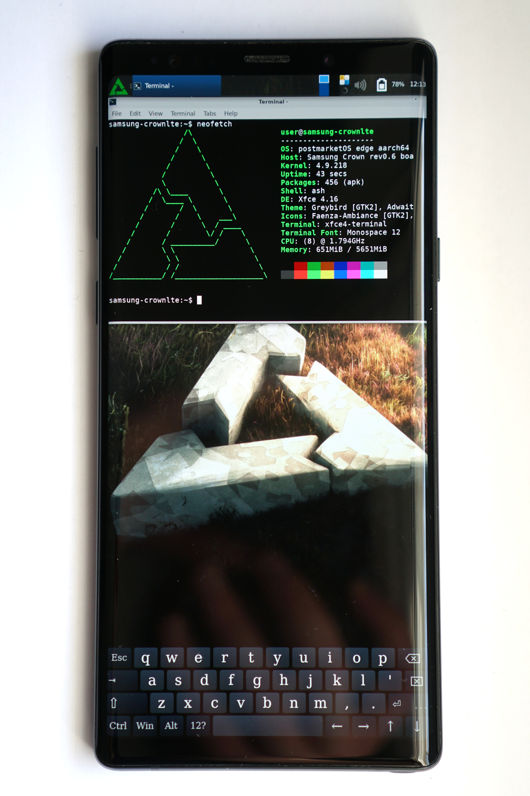

Samsung Galaxy Note 9 (Exynos) (samsung-crownlte)
|
 xfce4, onboard, neofetch | |
| Manufacturer | Samsung |
|---|---|
| Name | Galaxy Note 9 |
| Codename | samsung-crownlte |
| Released | 2018 |
| Category | testing |
| Original software | Android |
| Original version | 8.1 |
| postmarketOS kernel | 4.9.218 |
| Hardware | |
| Chipset | Samsung Exynos 9810 |
| CPU | 4x2.7 GHz Mongoose M3 & 4x1.9 GHz Cortex-A55 |
| GPU | Mali-G72 MP18 |
| Display | 1440x2960 Super AMOLED |
| Storage | 128/512 GB UFS 2.1 |
| Memory | 6/8 GB |
| Architecture | aarch64 |
| Type | handset |
| Unixbench Whet/Dhry score | 6053.8 |
{kind=link}
| USB Networking |
Partial
|
|---|---|
| Flashing |
Works
|
| Touchscreen |
Works
|
| Display |
Works
|
| WiFi |
Works
|
| FDE | |
| Mainline | |
| Battery |
Partial
|
| 3D Acceleration | |
| Audio |
Broken
|
| Bluetooth |
Works
|
| Camera | |
| GPS | |
| Mobile data | |
| SMS | |
| Calls | |
| USB OTG |
Works
|
| NFC |
Broken
|
| Accelerometer | |
|---|---|
| Magnetometer | |
| Ambient Light | |
| Proximity | |
| Hall Effect | |
| Barometer | |
| Power Sensor | |
| Camera Flash | |
|---|---|
| Keyboard | |
| Touchpad | |
| USB-A | |
| HDMI/DP | |
| Ir TX |
Unavailable
|
| Ir RX | |
| Stylus | |
| Haptics | |
| Ethernet | |
| FOSS bootloader | |
Contributors
- rom4nik - porting
Users owning this device
How to enter recovery/Odin mode
- Press and hold Bixby Key + Volume Down simultaneously while device is powered off, then plug USB cable in for Odin mode.
- Press and hold Bixby Key + Volume Up + Power simultaneously while device is powered off for recovery mode.
- Press and hold Volume Down + Power simultaneously for 7-8 seconds while device is powered on to force reboot. Once time is up immediately release the keys and press one of combinations above before boot logo appears, otherwise device will boot normally.
Installation
1. Unlock bootloader.
2. Flash using Heimdall:
$ pmbootstrap install
$ pmbootstrap flasher flash_rootfs
$ pmbootstrap flasher flash_kernel
or follow Installation_from_recovery_mode instead.
Note: if you choose not to install the firmware package, boot will take 3 minutes due to something (elogind? udev?) timeouting on V4L2 device nodes due to missing mfc_fw.bin blob. See this MR for details: https://gitlab.com/postmarketOS/pmaports/-/merge_requests/4176
USB networking
RNDIS
Similarly to Samsung_Galaxy_S8_(samsung-dreamlte), RNDIS interface fails to come up without additional setup in initfs-hook.sh, making no appearances in dmesg on host. With this hook, RNDIS interface appears in dmesg:
[279777.979155] usb 1-2: new high-speed USB device number 87 using xhci_hcd [279778.121336] usb 1-2: New USB device found, idVendor=18d1, idProduct=d001, bcdDevice= 4.09 [279778.121349] usb 1-2: New USB device strings: Mfr=5, Product=6, SerialNumber=7 [279778.121355] usb 1-2: Product: Samsung Galaxy Note 9 [279778.121359] usb 1-2: Manufacturer: Samsung [279778.121362] usb 1-2: SerialNumber: postmarketOS [279778.126491] rndis_host 1-2:1.0 usb0: register 'rndis_host' at usb-0000:00:14.0-2, RNDIS device, 4a:cd:d6:82:45:85 [279778.165343] rndis_host 1-2:1.0 enp0s20f0u2: renamed from usb0
and in ip addr on PC:
79: enp0s20f0u2: <BROADCAST,MULTICAST,UP,LOWER_UP> mtu 1500 qdisc fq_codel state UNKNOWN group default qlen 1000
link/ether 2a:8a:39:88:72:b8 brd ff:ff:ff:ff:ff:ff
inet6 fe80::198c:608d:4538:79a/64 scope link noprefixroute
valid_lft forever preferred_lft forever
Here's pmOS_init.log output:
Setup usb network Setting up an USB gadget through android_usb /init: line 394: can't create /sys/class/android_usb/android0/idVendor: Permission denied /init: line 395: can't create /sys/class/android_usb/android0/idProduct: Permission denied sh: write error: No such device Setting up an USB gadget through configfs mkdir: can't create directory '/config/usb_gadget/g1': File exists Couldn't create /config/usb_gadget/g1 mkdir: can't create directory '/config/usb_gadget/g1/functions/rndis.usb0': File exists Couldn't create /config/usb_gadget/g1/functions/rndis.usb0 mkdir: can't create directory '/config/usb_gadget/g1/configs/c.1': File exists Couldn't create /config/usb_gadget/g1/configs/c.1 ln: /config/usb_gadget/g1/configs/c.1/rndis.usb0: File exists Couldn't symlink rndis.usb0 Starting unudhcpd Using interface rndis0 Starting the DHCP daemon Trying to start server with parameters: Server IP addr: 172.16.42.1:67, client IP addr: 172.16.42.2, interface: rndis0 ERROR: boot partition not found! Trying to bind to interface: rndis0 Server started! Received DHCP DISCOVER from client: 2a:8a:39:88:72:b8
Please ignore missing boot partition error. Last line is repeated many times, assumedly due to many attempts by NetworkManager on my PC to obtain a DHCP lease. Despite that, DHCP doesn't actually work and static IP assignment results in "no route to host" on ping, ssh and telnet attempts. I guess that packets PC -> phone go through, but not phone -> PC? Needs more investigation.
It should also be noted that this hook doesn't help at all - nothing in dmesg on PC.
DHCP server takes a lot of time to start?
This is more of a note to self, but: if you're dumping the log to SD card by cat /tmp/init_pmOS.log >> /sdcard/init_pmOS.log once a second, DHCP DISCOVER entries appear after ~ 150 seconds. No idea why. Maybe they'll appear in NCM approach too?
Actually, it's the DHCP server that starts after ~ 150 seconds - the following block appears:
Trying to bind to interface: rndis0 Server started! Received DHCP DISCOVER from client: 2a:8a:39:88:72:b8 Received DHCP DISCOVER from client: 2a:8a:39:88:72:b8 Received DHCP DISCOVER from client: 2a:8a:39:88:72:b8 ...
PC still doesn't get a DHCP lease.
Lack of MAC addresses in ARP table
Both phone and PC has (incomplete) where MAC address of the other device should be.
Miraculous broken telnet connection
I'd also like to note that some time ago, somehow, I managed to get RNDIS working (not sure if DHCP or manual assignment) and was able to telnet into the device (with debug-shell hook), but pressing Return inside shell caused a disconnection. I was able to reconnect a few times without having to reboot the device or anything like that. I could type and autocomplete using Tab to poke around the initramfs, but not much more. Best thing is, I really have no idea how I achieved this - I remember that mere rebuilding of device package broke this. There was some hefty initfs-hook involved I think. I put this section here as a glimmer of hope for anyone else who might want to try working on this phone.
Here is my message on #postmarketos asking for help understanding what happened. Not much luck, sadly.
CDC NCM
Here's a very rough initfs-hook that brings up NCM interface somewhat:
# prevent automatic network setup touch /tmp/_setup_usb_network # adapted from samsung-dream, required for android0 to appear CONFIGFS=/config/usb_gadget mkdir $CONFIGFS/g1 mkdir $CONFIGFS/g1/functions/ncm.usb0 mkdir $CONFIGFS/g1/configs/c.1 ln -s $CONFIGFS/g1/functions/ncm.usb0 $CONFIGFS/g1/configs/c.1 # adapted from LineageOS echo 0 > /sys/class/android_usb/android0/enable echo 0x685d > $CONFIGFS/g1/idProduct echo 0x04e8 > $CONFIGFS/g1/idVendor echo ncm > /sys/class/android_usb/android0/functions echo 2 > $CONFIGFS/g1/bDeviceClass echo "10c00000.dwc3" > $CONFIGFS/g1/UDC echo 1 > /sys/class/android_usb/android0/enable
samsung-dream reference is this hook, LineageOS reference is this part of init.usb_accessory.rc.
dmesg output on PC:
[279564.808997] usb 1-2: new high-speed USB device number 84 using xhci_hcd [279564.951002] usb 1-2: New USB device found, idVendor=04e8, idProduct=685d, bcdDevice= 4.09 [279564.951016] usb 1-2: New USB device strings: Mfr=0, Product=0, SerialNumber=0 [279564.976909] cdc_ncm 1-2:1.0: MAC-Address: 4a:ad:cd:07:2e:77 [279564.977850] cdc_ncm 1-2:1.0 usb0: register 'cdc_ncm' at usb-0000:00:14.0-2, CDC NCM, 4a:ad:cd:07:2e:77
ip addr output on PC:
76: enp0s20f0u2: <NO-CARRIER,BROADCAST,MULTICAST,UP> mtu 1500 qdisc fq_codel state DOWN group default qlen 1000
link/ether 76:70:98:24:d4:d6 brd ff:ff:ff:ff:ff:ff
Notice the NO-CARRIER. Connectivity doesn't work - ncm0 interface on phone stays down without IP (but with MAC), possibly due to DHCP server function expecting one of following: rndis0, usb0 and eth0. After patching init_functions.sh to try ncm0, apparently IP assignment fails on that interface for some reason. Needs more investigation.
Disabling DHCP server in deviceinfo and adding:
ifconfig ncm0 172.42.16.1 ( unudhcpd -i ncm0 -s 172.16.42.1 -c 172.16.42.2 ) &
to initfs-hook causes phone to show up in dmesg on PC this way:
[281483.275024] usb 1-2: new high-speed USB device number 96 using xhci_hcd [281483.416922] usb 1-2: New USB device found, idVendor=04e8, idProduct=685d, bcdDevice= 4.09 [281483.416936] usb 1-2: New USB device strings: Mfr=0, Product=0, SerialNumber=0 [281483.445437] cdc_ncm 1-2:1.0: MAC-Address: 56:7e:e2:2c:02:98 [281483.446893] cdc_ncm 1-2:1.0 usb0: register 'cdc_ncm' at usb-0000:00:14.0-2, CDC NCM, 56:7e:e2:2c:02:98 [281483.474033] cdc_ncm 1-2:1.0 enp0s20f0u2: renamed from usb0 [281483.599245] IPv6: ADDRCONF(NETDEV_CHANGE): enp0s20f0u2: link becomes ready
and in ip addr on PC this way:
81: enp0s20f0u2: <BROADCAST,MULTICAST,UP,LOWER_UP> mtu 1500 qdisc fq_codel state UP group default qlen 1000
link/ether 06:8a:54:d1:8c:ba brd ff:ff:ff:ff:ff:ff
inet6 fe80::198c:608d:4538:79a/64 scope link noprefixroute
valid_lft forever preferred_lft forever
but DHCP assignment fails, there are no DHCP DISCOVER entries in init_pmOS.log unlike with RNDIS, and static IP assignment on PC leads to no pings, ssh, telnet, etc. just like with RNDIS above.
After ~ 140 seconds some output from DHCP server suddenly appeared (just like with RNDIS), but it was a bit different:
Trying to bind to interface: ncm0 Server started! Received DHCP DISCOVER from client: 8e:9f:b6:8e:9b:6e Received DHCP REQUEST from client: 8e:9f:b6:8e:9b:6e Received DHCP REQUEST from client: 8e:9f:b6:8e:9b:6e Received DHCP REQUEST from client: 8e:9f:b6:8e:9b:6e Received DHCP REQUEST from client: 8e:9f:b6:8e:9b:6e Received DHCP REQUEST from client: 8e:9f:b6:8e:9b:6e Received DHCP DISCOVER from client: 8e:9f:b6:8e:9b:6e Received DHCP DISCOVER from client: 8e:9f:b6:8e:9b:6e Received DHCP DISCOVER from client: 8e:9f:b6:8e:9b:6e ...
After that it took ~ 420 seconds for another batch of DISCOVERs (no REQUESTs) to appear.
Fairphone_3_(fairphone-fp3) seems to be the only device in pmaports that uses NCM, but it didn't need any special tricks to get it running, unlike this phone.
USB OTG with external NIC
I needed to enable CONFIG_USB_RTL8152 for my USB NIC. However, NIC shows up in kernel logs after ~ 30 seconds since boot, which is way past start_unudhcpd() from init_functions.sh. Maybe enabling debug-shell and delaying boot in initfs-hook will help?
Yes it does. Enabled debug-shell hook, added sleep 40 in initfs-hook.sh and it worked.
- DHCP works
- pings return
- telnet works (and pressing Return doesn't result in segfaults)
Display
Current status
- pmOS splash screen - works
- console, fbkeyboard - screen is black, "echo 0 > blank" shows splash screen, "echo 0,0 > pan" and msm-fb-refresher doesn't help, IIRC disabling decon_release like here didn't help either
- Maybe needs CONFIG_FRAMEBUFFER_CONSOLE=y? This causes kernel panic after 6 seconds though.
<6>[ 5.850106] [5: swapper/0: 1] exynos-decon 16030000.decon_f: decon_probe start <6>[ 5.850116] [5: swapper/0: 1] decon-f: max win6, command mode, hw trigger <6>[ 5.850119] [5: swapper/0: 1] dsi mode(0). 0: SINGLE 1: DUAL <6>[ 5.850122] [5: swapper/0: 1] out type(0). 0: DSI 1: DISPLAYPORT 2: HDMI 3: WB <6>[ 5.850125] [5: swapper/0: 1] out idx(0). 0: DSI0 1: DSI1 2: DSI2 <6>[ 5.850195] [5: swapper/0: 1] This board doesn't support TE GPIO of 2nd LCD <6>[ 5.850218] [5: swapper/0: 1] decon_register_ext_irq: gpio(395) <6>[ 5.850401] [4: swapper/0: 1] decon_displayport_create_vsync_thread is needed for displayport path <6>[ 5.850594] [6: swapper/0: 1] #512 event log buffers are allocated <6>[ 5.850701] [4: swapper/0: 1] panel sd name(panel-sd.0) <6>[ 5.850709] [4: swapper/0: 1] lcd_info: hfp 2 hbp 2 hsa 2 vfp 3 vbp 15 vsa 1 <6>[ 5.850712] [4: swapper/0: 1] xres 1440 yres 2960 <6>[ 5.850715] [4: swapper/0: 1] PANEL:INFO:panel_core_ioctl:PANEL_IOC_REG_PANEL_RESET <6>[ 5.850718] [4: swapper/0: 1] PANEL:INFO:panel_core_ioctl:PANEL_IOC_GET_PANEL_STATE <6>[ 5.850720] [4: swapper/0: 1] DECON:INFO:decon_get_out_sd:decon connected state : 1 <6>[ 5.850724] [4: swapper/0: 1] default_win 5 win_idx 0 xres 1440 yres 2960 <6>[ 5.850728] [4: swapper/0: 1] default_win 5 win_idx 1 xres 1440 yres 2960 <6>[ 5.850731] [4: swapper/0: 1] default_win 5 win_idx 2 xres 1440 yres 2960 <6>[ 5.850734] [4: swapper/0: 1] default_win 5 win_idx 3 xres 1440 yres 2960 <6>[ 5.850737] [4: swapper/0: 1] default_win 5 win_idx 4 xres 1440 yres 2960 <6>[ 5.850743] [4: swapper/0: 1] exynos-decon 16030000.decon_f: allocating memory for display <6>[ 5.850747] [4: swapper/0: 1] exynos-decon 16030000.decon_f: real_size=4262400 (1440.2960), virt_size=8524800 (1440.5920) <6>[ 5.850751] [4: swapper/0: 1] exynos-decon 16030000.decon_f: want 34099200 bytes for window[5] <6>[ 5.859450] [4: swapper/0: 1] exynos-decon 16030000.decon_f: alloated memory <6>[ 5.859454] [4: swapper/0: 1] exynos-decon 16030000.decon_f: fb start addr = 0x10000000 <6>[ 5.859457] [4: swapper/0: 1] default_win 5 win_idx 5 xres 1440 yres 2960 <0>[ 5.859669] [4: swapper/0: 1] Unable to handle kernel NULL pointer dereference at virtual address 00000000 <2>[ 5.859675] [4: swapper/0: 1] sec_debug_set_extra_info_fault = KERN / 0x0 <1>[ 5.859685] [4: swapper/0: 1] [0000000000000000] user address but active_mm is swapper <0>[ 5.859690] [4: swapper/0: 1] Internal error: Oops: 86000005 [#1] PREEMPT SMP <4>[ 5.859694] [4: swapper/0: 1] Modules linked in: <0>[ 5.859699] [4: swapper/0: 1] exynos-snapshot: core register saved(CPU:4) <0>[ 5.859701] [4: swapper/0: 1] FEMERR0SR: 0000000000000000, FEMERR1SR: 0000000000000000 <0>[ 5.859703] [4: swapper/0: 1] LSMERR0SR: 0000000000000000, LSMERR1SR: 0000000000000000 <0>[ 5.859706] [4: swapper/0: 1] TBWMERR0SR: 0000000000000000, TBWMERR1SR: 0000000000000000 <0>[ 5.859707] [4: swapper/0: 1] L2MERR0SR: 0000000000000000, L2MERR1SR: 0000000000000000 <0>[ 5.859710] [4: swapper/0: 1] BANK0 L3MERR0SR: 0000000000000000, L3MERR1SR: 0000000000000000 <0>[ 5.859712] [4: swapper/0: 1] BANK1 L3MERR0SR: 0000000000000000, L3MERR1SR: 0000000000000000 <0>[ 5.859714] [4: swapper/0: 1] BANK2 L3MERR0SR: 0000000000000000, L3MERR1SR: 0000000000000000 <0>[ 5.859716] [4: swapper/0: 1] BANK3 L3MERR0SR: 0000000000000000, L3MERR1SR: 0000000000000000 <0>[ 5.859718] [4: swapper/0: 1] exynos-snapshot: context saved(CPU:4) <6>[ 5.860299] [4: swapper/0: 1] exynos-snapshot: item - log_kevents is disabled <6>[ 5.860305] [4: swapper/0: 1] TIF_FOREIGN_FPSTATE: 0, FP/SIMD depth 0, cpu: 0 <4>[ 5.860310] [4: swapper/0: 1] CPU: 4 PID: 1 Comm: swapper/0 Not tainted 4.9.218 #3-postmarketOS <4>[ 5.860314] [4: swapper/0: 1] Hardware name: Samsung Crown rev0.6 board based on EXYNOS9810 (DT) <4>[ 5.860318] [4: swapper/0: 1] task: 0000000075daa021 task.stack: 000000006300fe22 <4>[ 5.860322] [4: swapper/0: 1] PC is at 0x0 <4>[ 5.860329] [4: swapper/0: 1] LR is at soft_cursor+0x15c/0x1e0 <4>[ 5.860332] [4: swapper/0: 1] pc : [<0000000000000000>] lr : [<ffffff800858020c>] pstate: 60400045 <4>[ 5.860335] [4: swapper/0: 1] sp : ffffffc8f5ab7560 <4>[ 5.860339] [4: swapper/0: 1] x29: ffffffc8f5ab7560 x28: 00000000ffffffff <4>[ 5.860343] [4: swapper/0: 1] x27: ffffffc8e7148000 x26: 0000000000000010 <4>[ 5.860346] [4: swapper/0: 1] x25: 0000000000000001 x24: 0000000000000010 <4>[ 5.860349] [4: swapper/0: 1] x23: 0000000000000001 x22: ffffffc8f30296d0 <4>[ 5.860352] [4: swapper/0: 1] x21: ffffffc8e9578000 x20: ffffffc8f5ab7630 <4>[ 5.860355] [4: swapper/0: 1] x19: ffffffc8f3029680 x18: 0000000000000001 <4>[ 5.860358] [4: swapper/0: 1] x17: 0000000000000005 x16: 0000000000000004 <4>[ 5.860360] [4: swapper/0: 1] x15: 0000000000000003 x14: 0000000000000002 <4>[ 5.860363] [4: swapper/0: 1] x13: 0000000000000001 x12: fffffffffffffe98 <4>[ 5.860365] [4: swapper/0: 1] x11: 0000000000000000 x10: 0000000000000006 <4>[ 5.860368] [4: swapper/0: 1] x9 : 0000000000000000 x8 : 0000000000000000 <4>[ 5.860371] [4: swapper/0: 1] x7 : 00000000ffffffff x6 : 0000000000000000 <4>[ 5.860373] [4: swapper/0: 1] x5 : 0000000000000001 x4 : 0000000000000000 <4>[ 5.860376] [4: swapper/0: 1] x3 : 0000000000000001 x2 : 0000000000000000 <4>[ 5.860378] [4: swapper/0: 1] x1 : ffffffc8f3029680 x0 : ffffffc8e9578000
- i3wm, lxqt, mate, sxmo-de-dwm, xfce4 - screen works with msm-fb-refresher and
logind-check-graphical=falseset in LightDM config (see: https://github.com/canonical/lightdm/commit/77a7c6b7b8ca896b98ef43826641bdd520650bfb introduced in June 2022)- I guess all X11 based UIs will work?
- weston - won't work anymore since upstream dropped the fbdev backend (pmaports#1431, pmaports!2950) and AFAIK there is no Direct Rendering Management support in vendor kernel
- sxmo-de-sway, sway, phosh - won't work since fbdev is not supported by wlroots and AFAIK there is no DRM support in vendor kernel
Todo
- You can refresh the screen manually with "echo 0,0 > /sys/class/graphics/fb0/pan" or use msm-fb-refresher. When reading Troubleshooting:display#Screen_does_not_refresh I was under the impression that msm-fb-refresher wouldn't be helpful, since "cat modes > mode" didn't refresh screen on this phone. Maybe this note could be added to that wiki page, if true?
Serial debugging
USB
Kernel config has CONFIG_MUIC_MAX77705 enabled. Kernel code (android_kernel_samsung_universal9810/drivers/muic/max77705-muic.c) has this:
static const struct max77705_muic_vps_data muic_vps_table[] = {
{
.adc = MAX77705_UIADC_523K,
.vbvolt = VB_LOW,
.chgtyp = CHGTYP_NO_VOLTAGE,
.muic_switch = COM_UART,
.vps_name = "JIG UART OFF",
.attached_dev = ATTACHED_DEV_JIG_UART_OFF_MUIC,
},
{
.adc = MAX77705_UIADC_523K,
.vbvolt = VB_HIGH,
.chgtyp = CHGTYP_DONTCARE,
.muic_switch = COM_UART,
.vps_name = "JIG UART OFF/VB",
.attached_dev = ATTACHED_DEV_JIG_UART_OFF_VB_MUIC,
},
{
.adc = MAX77705_UIADC_619K,
.vbvolt = VB_LOW,
.chgtyp = CHGTYP_NO_VOLTAGE,
.muic_switch = COM_UART,
.vps_name = "JIG UART ON",
.attached_dev = ATTACHED_DEV_JIG_UART_ON_MUIC,
},
{
.adc = MAX77705_UIADC_619K,
.vbvolt = VB_HIGH,
.chgtyp = CHGTYP_DONTCARE,
.muic_switch = COM_UART,
.vps_name = "JIG UART ON/VB",
.attached_dev = ATTACHED_DEV_JIG_UART_ON_VB_MUIC,
Perhaps a serial cable could be made? Serial_debugging:Cable_schematics#Samsung_Galaxy_S7_and_S5
UART
Service manual, file SM-N960F_SVC_SCHEMATIC.pdf, page 5 shows that JTAG Connector's (picture below) pin 10 (AP_UART_TXD) is UART TX signal and pin 12 (AP_UART_RXD) is UART RX.
{kind=link}
The following picture shows the motherboard and a zoom in on JTAG Connector with its pin numbers. Wires have been soldered to ground, UART TX and UART RX.
{kind=link}
You can connect to the ground by soldering to the pin shown in picture above or just using some part of the motherboard's ground plane, e.g. the metal shielding marked '672 #2'. Apparently, screw holes are not connected to the ground plane. Be aware that UART high level (logical 1) is 1.8 V. UART decoder settings: baud rate - 115200, parity - none, data bits - 8.
USB
OTG
Tested, works: mouse, RTL8152 based NIC, DAC (Fiio E10K).
Issues
- It seems that OTG starts working ~ 30 seconds after boot.
- If phone was rebooted due to kernel panic, OTG adapter needs to be reconnected.
- Xfce battery status icon shows battery as charging whenever OTG adapter is plugged in.
DisplayPort
While both stock and LineageOS has the video output working with Lenovo 40A9 dock, so far I've been unable to get it working on pmOS. The display shows up in dmesg, but not in xrandr.
[ 1330.762760] max77705:max77705_irq_thread: irq[278] 278/238/20 irq_src=0x08 pmic_rev=0x03 [ 1330.764778] [MAX77705] irq_reg, complete [1], 4, 0, 80, 0, f0 [ 1330.764801] [MAX77705] dump_reg, 27, 5, 85, 0, b1, 8, 11, 97 [ 1330.765138] max77705_pdmsg_irq: IRQ(266)_IN [ 1330.765157] max77705: max77705_pd_check_pdmsg: pd_msg [11] [ 1330.765174] max77705_pdmsg_irq: IRQ(266)_OUT [ 1330.765957] max77705:max77705_irq_thread: irq[278] 278/238/20 irq_src=0x08 pmic_rev=0x03 [ 1330.767891] [MAX77705] irq_reg, complete [1], 4, 0, 90, 0, f0 [ 1330.767915] [MAX77705] dump_reg, 2f, 5, 85, 0, b1, 8, 11, 97 [ 1330.768248] max77705_pdmsg_irq: IRQ(266)_IN [ 1330.768265] max77705: max77705_pd_check_pdmsg: pd_msg [11] [ 1330.768279] max77705_pdmsg_irq: IRQ(266)_OUT [ 1330.768300] max77705: max77705_vdm_attention_irq: IRQ(277)_IN [ 1330.768317] max77705: max77705_receive_alternate_message: : bFLAG_Vdm_Attention [ 1330.768333] max77705: max77705_process_alternate_mode: mode : 0x20 [ 1330.768351] usb_notify: is_blocked type=1, disable_state=0 [ 1330.768378] max77705: is_empty_usbc_cmd_queue: usbc_cmd_queue Empty(T) [ 1330.768397] max77705: max77705_usbc_opcode_write: W->W opcode[0x4b] write_length[1] read_length[11] [ 1330.768414] max77705: front_usbc_cmd: Opcode(0x4b) [ 1330.768431] max77705: dequeue_usbc_cmd: Opcode(0x4b) Response(0xff) [ 1330.768448] max77705: max77705_usbc_cmd_run: No ISR [ 1330.768466] max77705: max77705_i2c_opcode_write: opcode 0x4b, write_length 2 [ 1330.768488] max77705: opcode_write: 00000000: 4b 06 [ 1330.768851] max77705: max77705_vdm_attention_irq: IRQ(277)_OUT [ 1330.770074] max77705:max77705_irq_thread: irq[278] 278/238/20 irq_src=0x08 pmic_rev=0x03 [ 1330.771339] [MAX77705] irq_reg, complete [1], 84, 0, 0, 0, f0 [ 1330.771359] [MAX77705] dump_reg, 27, 5, 85, 0, b1, 8, 11, 97 [ 1330.771382] max77705: max77705_apcmd_irq: IRQ(251)_IN [ 1330.771650] max77705: max77705_apcmd_irq: [IN] sysmsg : 5 [ 1330.771672] max77705: dequeue_usbc_cmd: Opcode(0xff) Response(0x4b) [ 1330.771689] max77705: dequeue_usbc_cmd: front->next = NULL [ 1330.771702] max77705: is_empty_usbc_cmd_queue: usbc_cmd_queue Empty(T) [ 1330.771718] max77705: max77705_usbc_cmd_run: Apcmdres ISR !!! [ 1330.772393] max77705: max77705_i2c_opcode_read: opcode 0xff, read_length 12, ret_error 0 [ 1330.772412] max77705: opcode_read: 00000000: 4b 06 4f 29 06 81 01 ff 9a 00 00 00 [ 1330.772436] max77705: max77705_vdm_dp_attention: max77705_vdm_dp_attention DP_ATTENTION = 0x0000009A [ 1330.772461] max77705: max77705_vdm_dp_attention: max77705_vdm_dp_attention : pin configuration is already sent as DP_Pin_Assignment_D! [ 1330.772486] max77705: max77705_ccic_event_work: usb: DIAES 7-8-1-0-0 [ 1330.772542] max77705: is_empty_usbc_cmd_queue: usbc_cmd_queue Empty(T) [ 1330.772559] max77705: max77705_usbc_cmd_run: Queue, Empty [ 1330.772575] max77705: max77705_apcmd_irq: IRQ(251)_OUT [ 1330.773321] max77705: max77705_ccic_event_notifier: usb: dest=DP, id=ID_DP_HPD, attach=1, event=0 [ 1330.773350] ccic_notifier_notify: src:5 dest:7 id:08 sub1:1 sub2:00 sub3:00 [ 1330.773373] usb: [M] manager_handle_ccic_notification: src:CCIC dest:DP id:ID_DP_HPD attach/rid:1 [ 1330.773394] usb: [M] manager_notifier_notify: src:CCIC dest:DP id:ID_DP_HPD sub1:01 sub2:00 sub3:00 [ 1330.773437] [SX9320]: sx9320_ccic_handle_notification - drp = 0 attat = 1 [ 1330.773648] Displayport: CCIC_NOTIFY_ID_DP_HPD, 1, 0 [ 1330.773671] Displayport: displayport hpd changed 1 [ 1330.773694] Displayport: displayport_reg_sw_reset [ 1330.773720] Displayport: displayport_reg_init [ 1330.773736] dwc3_exynos_phy_enable owner=1 (usb:0 dp:1) on=1 + [ 1330.774462] dwc3_otg_phy_enable [ 1330.774486] dwc3_otg_phy_enable phy control=1 owner=1 (usb:0 dp:1) on=1 [ 1330.774501] dwc3_exynos_phy_enable - [ 1330.774550] [exynos_usbdrd_inform_dp_use] dp use = 1, lane_cnt = 2 [ 1330.786192] Displayport: Read DPCD REV NUM 0_5 12 14 c2 01 00 11 [ 1330.786216] Displayport: Read DPCD REV NUM 6_B 01 83 02 00 00 00 [ 1330.786688] Displayport: Read link status 01 00 00 00 80 00 [ 1330.786923] Displayport: Branch revision: HW(0x10), SW(0x3, 0xD) [ 1330.786932] Displayport: link training in hpd_changed [ 1330.787139] Displayport: DPCD_ADD_I2C_SPEED_CONTROL_CAPABILITES = 0x0 [ 1330.790244] EDID: 00000000: 00 ff ff ff ff ff ff 00 41 0c 52 c1 a1 00 00 00 [ 1330.790256] EDID: 00000010: 11 1c 01 04 a5 3c 22 78 3a 4e 25 ad 4f 44 ac 27 [ 1330.790266] EDID: 00000020: 0d 50 54 bf ef 00 d1 c0 b3 00 95 00 81 80 81 40 [ 1330.790277] EDID: 00000030: 81 c0 01 01 01 01 56 5e 00 a0 a0 a0 29 50 30 20 [ 1330.790287] EDID: 00000040: 35 00 55 50 21 00 00 1e 00 00 00 fd 00 32 4c 1e [ 1330.790297] EDID: 00000050: 63 1e 01 0a 20 20 20 20 20 20 00 00 00 fc 00 50 [ 1330.790307] EDID: 00000060: 48 4c 20 32 37 36 45 38 46 0a 20 20 00 00 00 ff [ 1330.790317] EDID: 00000070: 00 41 55 35 31 38 31 37 30 30 30 31 36 31 01 8e [ 1330.790329] Displayport: block_cnt = 2 [ 1330.790539] Displayport: DPCD_ADD_I2C_SPEED_CONTROL_CAPABILITES = 0x0 [ 1330.794122] EDID: 00000000: 02 03 1e f1 4b 01 03 05 14 04 13 1f 12 02 11 90 [ 1330.794147] EDID: 00000010: 23 09 07 07 83 01 00 00 65 03 0c 00 10 00 02 3a [ 1330.794158] EDID: 00000020: 80 18 71 38 2d 40 58 2c 45 00 55 50 21 00 00 1e [ 1330.794168] EDID: 00000030: 01 1d 00 72 51 d0 1e 20 6e 28 55 00 55 50 21 00 [ 1330.794179] EDID: 00000040: 00 1e 8c 0a d0 8a 20 e0 2d 10 10 3e 96 00 55 50 [ 1330.794189] EDID: 00000050: 21 00 00 18 8c 0a d0 90 20 40 31 20 0c 40 55 00 [ 1330.794200] EDID: 00000060: 55 50 21 00 00 18 f0 3c 00 d0 51 a0 35 50 60 88 [ 1330.794210] EDID: 00000070: 3a 00 55 50 21 00 00 1c 00 00 00 00 00 00 00 77 [ 1330.794364] EDID: found ext std timing 0 2byte:0xD1C0 [ 1330.794378] EDID: found ext std timing 1 2byte:0x81C0 [ 1330.794394] Displayport: mon name: PHL 276E8F, gamma: 2.20 [ 1330.794414] Unimplemented SVD code 4 [ 1330.794423] Unimplemented SVD code 31 [ 1330.794432] Unimplemented SVD code 2 [ 1330.794441] Unimplemented SVD code 17 [ 1330.794449] Unimplemented SVD code 16 [ 1330.794468] Displayport: EDID: found: V2560X1440P59, dex: 2 [ 1330.794494] Displayport: EDID: found: V1920X1080P60, dex: 1 [ 1330.794507] Displayport: EDID: found: V1280X1024P60, dex: 1 [ 1330.794518] Displayport: EDID: found: V1280X720P60, dex: 1 [ 1330.794531] Displayport: EDID: found: V720X480P60, dex: 1 [ 1330.794542] Displayport: EDID: found: V720X576P50, dex: 1 [ 1330.794557] Displayport: EDID: found: V1280X720P50, dex: 1 [ 1330.794581] Displayport: EDID: found(VDB): V1920X1080P50, dex: 1 [ 1330.794595] Displayport: misc:0x4, Audio ch:0x2, sample:0x7, bit:0x7 [ 1330.794607] Displayport: detail_timing_desc1: 2560*1440@59 (241500000, 4140ps) [ 1330.794619] Displayport: invalid timing i:23, best:24 [ 1330.795117] Displayport: Full Link Training Start + : 14 c2 [ 1330.795128] Displayport: max video_format : V2560X1440P59 [ 1330.795137] Displayport: set link late: 0x14, lane cnt:2 [ 1330.795147] Displayport: displayport->fsys0_qos 336000Mhz [ 1330.795669] Displayport: Reduce_Link_Rate_Retry(0x14) [ 1330.795741] [exynos_usbdrd_inform_dp_use] dp use = 1, lane_cnt = 2 [ 1330.795778] Displayport: link_rate = 14 [ 1330.795784] Displayport: lane_cnt = 2 [ 1330.796594] Displayport: Voltage_Swing_Retry 00 00 00 00 [ 1330.813436] Displayport: check voltage swing(0): val(34,34) 0/2, 0/2, 0/2, 0/2 [ 1330.813491] Displayport: Voltage_Swing_Retry 02 02 02 02 [ 1330.830117] Displayport: EQ_Training_Start [ 1330.830363] Displayport: EQ_Training_Retry 02 02 02 02 [ 1330.846979] Displayport: lane_cr_done = 3 [ 1330.846993] Displayport: lane_channel_eq_done = 3 [ 1330.846998] Displayport: lane_symbol_locked_done = 3 [ 1330.847003] Displayport: interlane_align_done = 1 [ 1330.847220] Displayport: Full Link Training Finish - : 14 02 [ 1330.847226] Displayport: LANE_SET [0] : 02 02 02 02 [ 1330.847235] Displayport: SST1_AUDIO_DMA_REQUEST_LATENCY_CONFIG = 0x1001f [ 1330.847246] Displayport: displayport_audio_init_config [ 1330.847256] Displayport: audio state: func_en=0x3, aud_en=0x1, master_t_gen=0x1, dma_req=0x5001f, aud_con=0x4000000 [ 1330.847447] Displayport: DFP type: Displayport(0x11) [ 1330.847453] Displayport: HPD status = 1 [ 1333.892595] Displayport: audio info = 0x43F0102 [ 1333.892786] Displayport: enable timeout
Battery
Charge level reporting and charging works on Xfce, using either wired or wireless charger.
charging-sdl has been disabled in postmarketos-mkinitfs (pmaports#1064, pmaports!2111). I tried doing Charging-sdl#Charge mode not detected, but couldn't get the modified init_functions.sh to appear in initramfs flashed to device.
diff between kernel cmdline when booted into TWRP by button press and when booted into pmOS by charger:
$ diff cmdline_twrp cmdline_charger 41,42c41,42 < sec_debug.reset_reason=9 < sec_reset.reset_reason=9 --- > sec_debug.reset_reason=7 > sec_reset.reset_reason=7 44c44 < sec_debug.pwronsrc=0x1 --- > sec_debug.pwronsrc=0x4
When booted by charger, touch screen, stylus and USB OTG doesn't work.
Audio
So far broken. Without firmware there's only Star-Madera output device available.
samsung-abox complains in dmesg about lack of following firmware: AP_AUDIO_SLSI.bin APBargeIn_AUDIO_SLSI.bin APBiBF_AUDIO_SLSI.bin APDV_AUDIO_SLSI.bin calliope_dram.bin calliope_iva.bin calliope_sram.bin dsm.bin dsm_tune.bin SoundBoosterParam.bin, all from /vendor/firmware. I've also patched /drivers/base/firmware_class.c to include /lib/firmware/postmarketos in fw_path.
abox_rdma output device appears in Xfce volume control once firmware is loaded (which sometimes happens automatically after a few minutes). Manual restart of PulseAudio (killall pulseaudio) sometimes forces firmware to be loaded, sometimes it fails with e.g. samsung-abox-rdma 17c51000.abox_rdma: ASoC: can't open platform 17c51000.abox_rdma: -16
or samsung-abox 17c50000.abox: Invalid calliope state: 0 in dmesg. Once it works, killing PulseAudio one more time causes a kernel panic. One time I've had the kernel panic after opening Xfce audio mixer while Xfce audio widget already had abox_rdma on output list.
There's /etc/SoundBoosterParam.txt in vendor partition, but I'm not sure if it's important.
Bluetooth
Tested with Jabra Elite 65t, sound works and retains decent bitrate. hciattach from bluez-deprecated is required because btattach doesn't set the baud rate to desired after uploading firmware. Relevant: https://github.com/Arkq/bluez-alsa/issues/205
Unixbench
========================================================================
BYTE UNIX Benchmarks (Version 5.1.3)
System: samsung-crownlte: Linux
OS: Linux -- 4.9.218 -- #2-postmarketOS SMP PREEMPT Wed Mar 2 17:43:34 UTC 2022
Machine: aarch64 (unknown)
Language: en_US.utf8 (charmap=, collate=)
11:42:14 up 16 min, 0 users, load average: 13.10, 12.52, 8.48; runlevel
------------------------------------------------------------------------
Benchmark Run: Fri Mar 04 2022 11:42:14 - 11:47:03
8 CPUs in system; running 1 parallel copy of tests
Dhrystone 2 using register variables 15519098.8 lps (10.0 s, 7 samples)
Double-Precision Whetstone 4379.0 MWIPS (10.1 s, 7 samples)
System Benchmarks Partial Index BASELINE RESULT INDEX
Dhrystone 2 using register variables 116700.0 15519098.8 1329.8
Double-Precision Whetstone 55.0 4379.0 796.2
========
System Benchmarks Index Score (Partial Only) 1029.0
------------------------------------------------------------------------
Benchmark Run: Fri Mar 04 2022 11:47:03 - 11:51:58
8 CPUs in system; running 8 parallel copies of tests
Dhrystone 2 using register variables 85154028.8 lps (10.0 s, 7 samples)
Double-Precision Whetstone 27623.8 MWIPS (9.8 s, 7 samples)
System Benchmarks Partial Index BASELINE RESULT INDEX
Dhrystone 2 using register variables 116700.0 85154028.8 7296.8
Double-Precision Whetstone 55.0 27623.8 5022.5
========
System Benchmarks Index Score (Partial Only) 6053.8
See also
- Device package
- Kernel package
- Firmware package
- Another kernel port with plenty of working features (including USB networking): XDA thread, GitHub repo
- pmaports!1699 - samsung-dream2lte MR, has USB networking discussion
- pmaports!1725 - Combined samsung-dream MR
- pmaports!1843 - samsung-dream color order fix and different networking setup in initfs-hook.sh (the one that also works for crownlte)
- Service manual with schematics (ask User:Rom4nik for mirror, if needed)